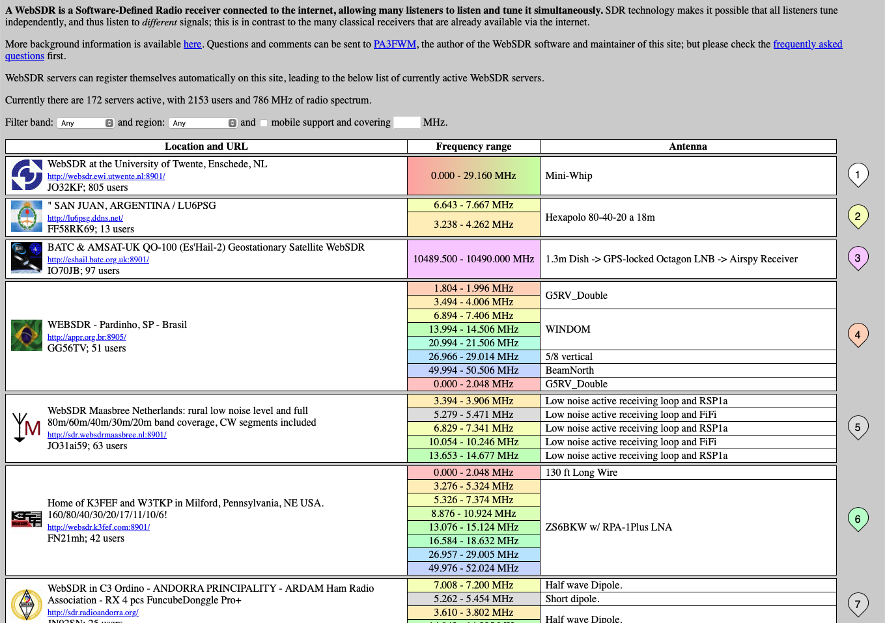
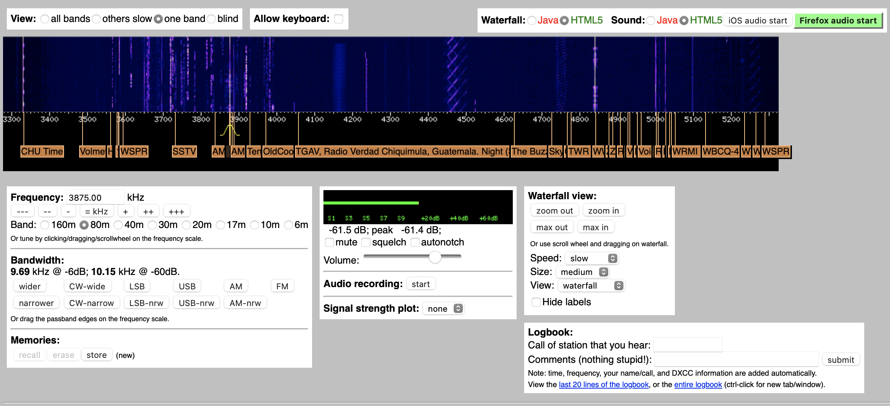
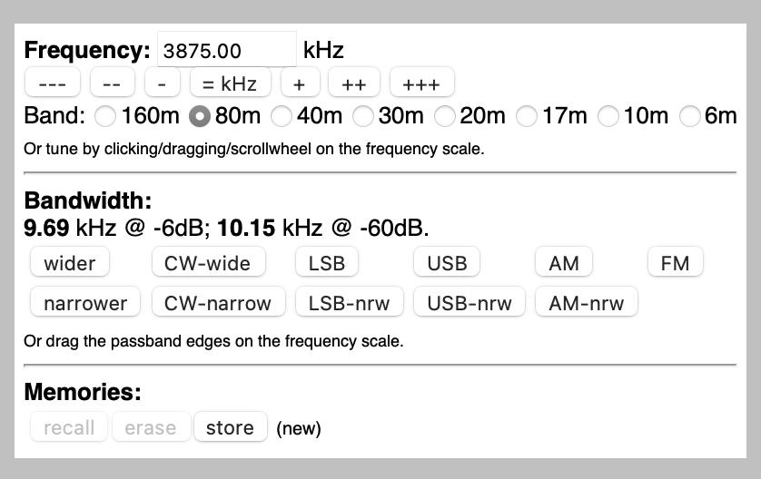
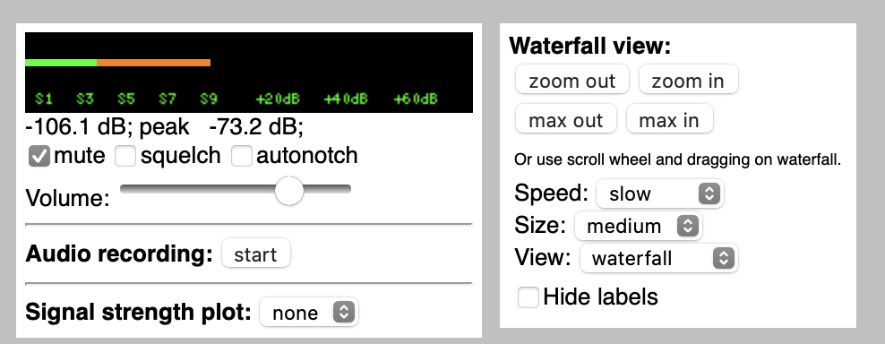
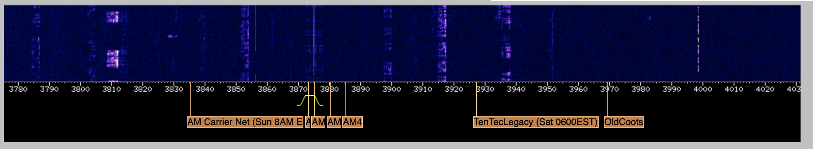

Quest: WebSDR
Listening to radio over the web
Thanks to the widespread availability of inexpensive software-defined radios (SDRs), it’s possible to listen to the ham bands over the internet from sites located all over the world. Yes, that means that your internet-connected phone, tablet, or computer can be your first ham radio receiver.
In this quest, we’ll check-in on the bands and listen to some [HF] [QSO]s.
Here are some other web-based SDRs you might try:
http://kiwisdr.com/public/
http://www.maghull-scene.co.uk/radio.htm
Visit the WebSDR site at https://websdr.org.
You will see a screen like the following:

Scroll down to see all of the places around the world where there are webSDR stations to listen to. You can pick any one you like, but we’ll focus on one in the U.S. that we use often because it’s close to our location.
Visit the K3FEF web SDR
Go to http://websdr.k3fef.com. This station is located in Milford, Pennsylvania on the Delaware River. It’s the closest one to Penn State. So, it’s often one to consult for listeners in our area.
Here is a screenshot of the K3FEF control panel.

The dark blue area at the top depicts the band activity at the time you visit. The figure shows radio signals being heard by K3FEF from about 3300 kHz (3.3 MHz) below the 80m ham band to 5300 kHz (5.5 MHz) in the 60m ham band.
If you are watching this on the web, you will see upwards motion. This is how the webSDR depicts the time series or history of recent signals. So, time is on the vertical axis of this two-dimensional figure. Sometimes this type of frequency-over-time display is called a waterfall. Except this waterfall falls upward.
Below the figure are some orange ‘flag’ or labels that other listeners have added. These identify the specific transmissions. If you look especially closely, you’ll also see a yellow ‘hump’ around 3875 kHz. That’s the specific frequency this SDR defaulted to when we opened it up. We’ll explain what the yellow hump means a bit later.
In the static figure above, you’ll notice a lot of activity between about 3550 kHz and 4000 kHz. The 80m and 75m ham bands occupy 3500-4000 kHz, so those are hams communicating. The figure was taken about 8:00am EDT (1200 UTC). These bands are usually open from evening to mid-morning.
Let’s focus on the white panel below the waterfall.

The panel’s Frequency control tells us that our radio is tuned to 3875 MHz, right in the middle of the 80/75m band, the phone (voice) portion. There are some controls to change the frequency, then below that, a set of buttons to change the band. The highlighted button confirms that we are in the 80/75m band1.
Notice that the K3FEF webSDR covers ham bands up through 6m. It does not cover the 15m or 12m bands, though.
Below the Frequency control is a set of buttons that control Bandwidth. No, bandwidth is not the size of your favorite jazz combo. Bandwidth means how much of the frequency spectrum the webSDR is capturing at this moment, centered on the 3875 [kHz] frequency we just mentioned. Different types of radio transmissions (voice vs. Morse code/[CW] for example) have different bandwidths. We often want to adjust our bandwidth to match the type of signal. If the bandwidth is much wider than the signal, we’re just adding noise. If the bandwidth is much narrower than the signal, we can lose information. Voice transmissions have wider bandwidth than Morse code/[CW]. And different types of voice signals have different bandwidths. [FM] is the widest, for example; [AM] is in the middle; and single sideband [SSB] the narrowest.
Our bandwidth is 9.69 [kHz] @ -6 [dB] 2. That’s wide, except for broadcast FM stations. We can adjust the bandwidth incrementally using the wider/narrower buttons or adjust the bandwidth to match a specific type of signal: CW-wide/CW-nrw (narrow), LSB-wide/LSB-nrw, USB-wide/USB-nrw, AM-wide/AM-nrw, and FM. We can also adjust the bandwidth manually.
Find a signal to listen to
Click on the green Firefox audio start button in the upper right hand of the screen. Be ready to adjust the volume on your computer downward! Or adjust the volume in the panel or even mute it (see the figure below).
Chances are that you’ll just hear static since we’re on a random frequency.

To fix that, look at the Waterfall view panel. Zoom in by clicking on the button a couple of times. Sometimes zooming moves window beyond the frequency where you are currently tuned. If that happens, you won’t see the yellow ‘hump’ anymore.
But you can find it again by clicking on the blue/purple area in the waterfall and dragging to the left or the right to put your current frequency–3875 kHz for our example–in the middle of the panel.
In our case, there’s a very strong signal around 3810 kHz.

Notice that most of the signal around 3810 kHz (3.810 MHz) lies below 3810. That’s because on 75m and 80m, hams use Lower Sideband ([LSB]) for [phone] transmissions. To see another example of what LSB and upper sideband ([USB]) signals look like, see figure below.
Going further
Now that you’ve gotten familiar with the K3FEF WebSDR, you might be curious to know what else there is to listen to, and equally important, when. I say when because the high frequency (HF) bands change their propagation characteristics–how far and how well they convey radio signals–based on the time of day, season of the year, and phase of the 11-year sunspot cycle, among other characteristics. We’ll do a deeper dive on these topics in the Band Conditions quest. For now, here are some general rules of thumb about where to listen and when:
75m/80m: These bands provide long distance (DX) communication at night, especially in the winter months, and regional communication in the early morning hours.
40m: This band also provides long distance communication at night and more reliable regional communication in the daylight hours.
20m: This band supports long distance communication during daylight hours.
17m: This band supports long distance communication during daylight hours.
15m: This band supports long distance communication during daylight hours.
12m: This band supports long distance communication during daylight hours during the peak times of the sunspot cycle. It is often closed at the depth of that cycle.
10m: This band supports long distance communication during daylight hours during the peak times of the sunspot cycle. It is often closed at the depth of that cycle.
Now, you might be interested to know what’s worth listening to or for. My recommendation would be for you to listen to established nets that have published schedules. For example, you can search for a net that meets specific criteria on the ARRL website at www.arrl.org/arrl-net-directory-search. You may also want to try the NetFinder site.
It would be good to add some information about some SWL stations that are easy to hear.
Also, there are some nets that are good examples, e.g., the M-Su Rooster Net on 3.990 MHz and the YSL System Nets, and some frequencies that are not good examples, e.g., 7.200 MHz and 14.313 MHz.
Why is it called the 80m band and also the 75m band and sometimes the 80m/75m band? Well, 300/3.5=
r 300/3.5and 300/4.0=r 300/4.0. So, the approximate speed of light (in millions of meters per second) divided by the frequency in MHz gives us the approximate wavelength of radio waves. It’s a single 0.5 MHz (500 kHz) chunk of frequency reserved exclusively for amateurs that roughly bracket ~80-75m.↩︎This means that if we look at the peak signal at 3875 kHz and calculate the point on both sides of 3875 kHz where the signal drops by 6 decibels (db) or about 4-fold, we’re left with 9.69 kHz of signal. The width of the yellow ‘hump’ in the waterfall display shows us this bandwidth visually.↩︎